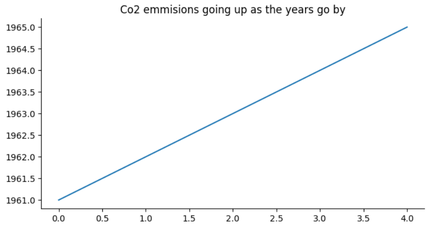

Australia
The dataset used here is from Kaggle.
Co2 Emissions Going Up as the Years Go by in Australia
How is Australia Affected by climate change?
- Right now Australia is facing higher temperatures than usual and extreme droughts. Becasue of water levels riding the also face floods and other extreme weathers.
- In Australia the ecosystems are also slowly being destroyed. Australia is home to many unique species of animals. For example some of the wetlands are drying up and animals dont have places to live.
How does Australia contribute to climate change?
Australia is one of the earths biggest producers of Co2. This is becasue of major deforestation. Each year around 20 Million Tons of Co2 is emmited into the atmosphere from this.
How is Australia dealing with climate change and what are the enviornmental policies?
Australia is setting a goal that Co2 emmisions will be reaching near zero by the year 2050. Right now the government is upgrading the main electricity board to use renewable power.